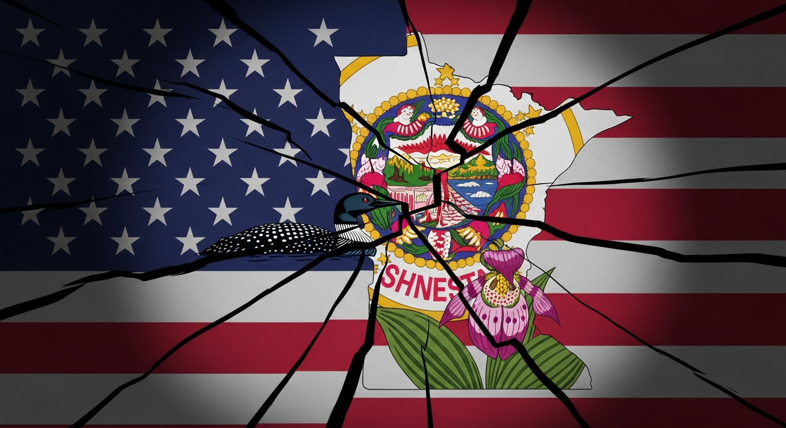
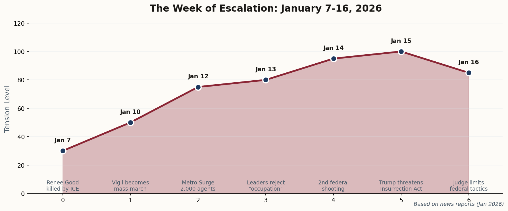
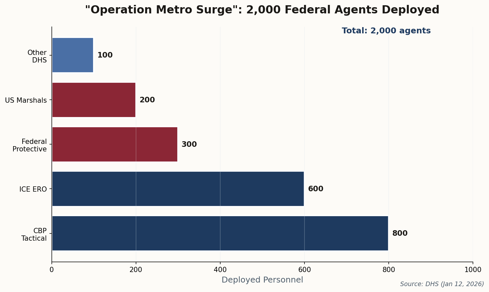

The Minnesota Standoff: Federal Power Meets State Resistance
A week of federal shootings, mass deployment, and constitutional threats has transformed Minneapolis into the front line of the most significant federal-state confrontation since the civil rights era.


Ten days that shook Minnesota: From vigil to constitutional crisis01
The Judiciary Steps In: Federal Judge Restricts Agent Tactics
Star TribuneJanuary 16, 2026
U.S. District Judge Katherine Menendez issued an 83-page order that may prove to be the most significant judicial check on executive power this administration has faced. The order prohibits the use of pepper spray and non-lethal munitions against peaceful protesters, bans arrests without probable cause, and restricts traffic stops near protest sites.
"Constitutional rights are not suspended because the federal government is frustrated with local dissent."
The ruling provides immediate legal protection for demonstrators who have faced increasingly aggressive federal tactics. It also signals that the federal judiciary is willing to draw lines the executive branch cannot cross—even in the name of "national security."
Why it matters: This is the first major judicial restraint on "Operation Metro Surge." It establishes precedent that federal agents operating in American cities remain bound by the Constitution, regardless of presidential rhetoric.
02
DOJ Targets Walz and Frey: Political Prosecution or Legitimate Inquiry?
CBS NewsJanuary 16, 2026
The Department of Justice has opened a formal investigation into Minnesota Governor Tim Walz and Minneapolis Mayor Jacob Frey, alleging they "conspired to impede" federal immigration enforcement. The probe directly targets public statements both leaders made refusing to cooperate with mass deportation operations.
This investigation marks a new phase in the standoff: the federal government is now using criminal law as a weapon against state and local officials who resist its policies. Critics are calling it political prosecution; the DOJ insists it's enforcing the Supremacy Clause.
"We will not be intimidated by political investigations designed to silence dissent." — Governor Tim Walz
Why it matters: If federal prosecutors can criminalize state officials for refusing cooperation, the entire structure of American federalism—where states retain significant independent authority—could collapse.
The jurisdictional divide: Where federal and state power collide03
Trump Threatens the Insurrection Act: A Rubicon Moment?
The Washington PostJanuary 15, 2026
President Trump took to Truth Social to threaten what would be one of the most consequential uses of executive power in modern history: invoking the Insurrection Act against Minnesota.
"If Governor Walz cannot control his state, I will. We will stop the insurrectionists." — President Trump, January 15, 2026
The Insurrection Act, last invoked during the 1992 LA riots, would allow the president to deploy active-duty military troops on American soil—bypassing the Posse Comitatus Act that normally prohibits such use. Military personnel would operate as domestic police, with all the implications that entails.
Legal scholars are divided on whether the current situation—which involves protests, not armed insurrection—meets the statutory threshold. But the threat alone has chilled the national discourse and raised the specter of military intervention against American citizens.
Why it matters: The threat crosses a line from law enforcement (however aggressive) to potential military occupation of a U.S. state. The last time the federal government sent troops against a state's wishes was 1957 in Little Rock—to enforce civil rights, not suppress them.
04
Another Shooting: Federal Officer Wounds Protester
MPR NewsJanuary 14, 2026
A federal immigration officer shot and wounded a man in Minneapolis during demonstrations outside a federal building. This is the second shooting involving federal agents in Minnesota this month, following the death of Renee Good on January 7—the incident that sparked the current wave of protests.
The shooting transformed what had been vigils and peaceful marches into something more volatile. Tensions between residents and federal law enforcement, already strained, reached a breaking point. The federal government maintains the officer acted in self-defense; witnesses dispute this account.
"We are witnessing a level of federal aggression on our streets that is unprecedented in peacetime." — Minneapolis City Council Member
Why it matters: The pattern of federal violence—two shootings in eight days—is fueling the protests rather than suppressing them. Each incident adds to the community's resolve and the sense that federal agents are an occupying force.

The scale of federal presence: 2,000 agents in the Twin Cities05
"This Is Not Law Enforcement": Local Leaders Reject Federal "Occupation"
The HillJanuary 13, 2026
A coalition of Minneapolis City Council members and state legislators held a defiant press conference denouncing the federal presence as an "occupation." They called for the immediate withdrawal of "Operation Metro Surge" forces and announced the formation of community "defense committees" to monitor federal agent activity.
"This is not law enforcement; this is an invading force in our own city."
The defense committees—organized neighborhood groups documenting federal actions, providing legal observers, and coordinating community response—represent a new phase of organized resistance. They echo tactics from the civil rights era, when communities organized to protect themselves from both official and unofficial violence.
Why it matters: The complete breakdown of cooperation between local and federal authorities creates a dangerous jurisdictional vacuum. Police who would normally assist federal operations are standing aside—or actively opposed.
06
Operation Metro Surge: 2,000 Federal Agents Deploy to Minneapolis
Associated PressJanuary 12, 2026
The Department of Homeland Security confirmed the deployment of 2,000 additional federal agents to the Twin Cities under "Operation Metro Surge." The operation, officially aimed at "accelerating immigration enforcement and protecting federal assets," has militarized parts of Minneapolis in ways not seen since the 2020 unrest.
The deployed units include tactical teams from Customs and Border Protection (CBP) and Immigration and Customs Enforcement (ICE), heavily equipped with riot gear. Federal vehicles have become a constant presence in neighborhoods that have historically had fraught relationships with law enforcement.
The Deployment Breakdown: CBP Tactical (800), ICE ERO (600), Federal Protective Service (300), US Marshals (200), Other DHS (100). This is the largest domestic federal law enforcement deployment since Portland 2020.
Why it matters: The sheer scale of the federal presence has become the primary visual catalyst for ongoing unrest. What began as grief over Renee Good's death has become resistance to what many residents experience as occupation.
This week began with a vigil and ends with the specter of military deployment. Minnesota has become the testing ground for a fundamental question: How far can federal power extend over unwilling states and cities?
The courts have begun to push back. The community has organized. The constitutional questions remain unresolved.